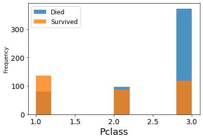

基礎
[1]:
import numpy as np
import pandas as pd
import matplotlib.pyplot as plt
%matplotlib inline
import seaborn as sns
import plotly.express as px
import plotly.graph_objects as go
import plotly.io as pio
pio.templates
from matplotlib.ticker import StrMethodFormatter
from sklearn.preprocessing import StandardScaler, MinMaxScaler, LabelBinarizer
import warnings
warnings.filterwarnings('ignore')
[2]:
# サンプルデータセット：titanic
df_train = pd.read_csv('data/train.csv')
df_test = pd.read_csv('data/test.csv')
df_gender = pd.read_csv('data/gender_submission.csv')
データ可視化
[3]:
df_train.head()
[3]:
| PassengerId | Survived | Pclass | Name | Sex | Age | SibSp | Parch | Ticket | Fare | Cabin | Embarked | |
|---|---|---|---|---|---|---|---|---|---|---|---|---|
| 0 | 1 | 0 | 3 | Braund, Mr. Owen Harris | male | 22.0 | 1 | 0 | A/5 21171 | 7.2500 | NaN | S |
| 1 | 2 | 1 | 1 | Cumings, Mrs. John Bradley (Florence Briggs Th... | female | 38.0 | 1 | 0 | PC 17599 | 71.2833 | C85 | C |
| 2 | 3 | 1 | 3 | Heikkinen, Miss. Laina | female | 26.0 | 0 | 0 | STON/O2. 3101282 | 7.9250 | NaN | S |
| 3 | 4 | 1 | 1 | Futrelle, Mrs. Jacques Heath (Lily May Peel) | female | 35.0 | 1 | 0 | 113803 | 53.1000 | C123 | S |
| 4 | 5 | 0 | 3 | Allen, Mr. William Henry | male | 35.0 | 0 | 0 | 373450 | 8.0500 | NaN | S |
[4]:
df_gender.head()
[4]:
| PassengerId | Survived | |
|---|---|---|
| 0 | 892 | 0 |
| 1 | 893 | 1 |
| 2 | 894 | 0 |
| 3 | 895 | 0 |
| 4 | 896 | 1 |
[5]:
# カラムの確認
df_train.info()
<class 'pandas.core.frame.DataFrame'>
RangeIndex: 891 entries, 0 to 890
Data columns (total 12 columns):
# Column Non-Null Count Dtype
--- ------ -------------- -----
0 PassengerId 891 non-null int64
1 Survived 891 non-null int64
2 Pclass 891 non-null int64
3 Name 891 non-null object
4 Sex 891 non-null object
5 Age 714 non-null float64
6 SibSp 891 non-null int64
7 Parch 891 non-null int64
8 Ticket 891 non-null object
9 Fare 891 non-null float64
10 Cabin 204 non-null object
11 Embarked 889 non-null object
dtypes: float64(2), int64(5), object(5)
memory usage: 83.7+ KB
[6]:
# 欠損の確認
sns.heatmap(df_train.isnull(), cbar=False);
[7]:
# 生存率の確認
women = df_train.loc[df_train['Sex'] == 'female']['Survived']
rate_women = sum(women)/len(women)
men = df_train.loc[df_train['Sex'] == 'male']['Survived']
rate_men = sum(men)/len(men)
print('% of women who survived:', rate_women)
print('% of men who survived:', rate_men)
% of women who survived: 0.7420382165605095
% of men who survived: 0.18890814558058924
[8]:
data = [df_train, df_test]
for dataset in data:
mean = df_train['Age'].mean()
std = df_test['Age'].std()
is_null = dataset['Age'].isnull().sum()
# compute random numbers between the mean, std and is_null
rand_age = np.random.randint(mean - std, mean + std, size = is_null)
# fill NaN values in Age column with random values generated
age_slice = dataset['Age'].copy()
age_slice[np.isnan(age_slice)] = rand_age
dataset['Age'] = age_slice
dataset['Age'] = df_train['Age'].astype(int)
[9]:
survived = 'survived'
not_survived = 'not survived'
fig, axes = plt.subplots(nrows=1, ncols=2,figsize=(16, 6))
women = df_train[df_train['Sex']=='female']
men = df_train[df_train['Sex']=='male']
ax = sns.distplot(women[women['Survived']==1].Age.dropna(), bins=18, label = survived, ax = axes[0], kde =False, color='green')
ax = sns.distplot(women[women['Survived']==0].Age.dropna(), bins=40, label = not_survived, ax = axes[0], kde =False, color='red')
ax.legend()
ax.set_title('Female')
ax = sns.distplot(men[men['Survived']==1].Age.dropna(), bins=18, label = survived, ax = axes[1], kde = False, color='green')
ax = sns.distplot(men[men['Survived']==0].Age.dropna(), bins=40, label = not_survived, ax = axes[1], kde = False, color='red')
ax.legend()
_ = ax.set_title('Male');
[10]:
fig = px.scatter_3d(df_train, x='Name', y='Sex', z='Age', color='Age')
fig.show()
Data type cannot be displayed: application/vnd.plotly.v1+json
[11]:
for template in ['plotly']:
fig = px.scatter(df_train,
x='PassengerId', y='Age', color='Survived',
log_x=True, size_max=20,
template=template, title='Which Age Survived?')
fig.show()
Data type cannot be displayed: application/vnd.plotly.v1+json
[12]:
sns.barplot(x='Pclass', y='Survived', data=df_train);
[13]:
plt.rc('xtick', labelsize=14)
plt.rc('ytick', labelsize=14)
plt.figure()
fig = df_train.groupby('Survived')['Pclass'].plot.hist(histtype='bar', alpha=0.8)
plt.legend(('Died','Survived'), fontsize = 12)
plt.xlabel('Pclass', fontsize = 18)
plt.show()

[14]:
embarked_mode = df_train['Embarked'].mode()
data = [df_train, df_test]
for dataset in data:
dataset['Embarked'] = dataset['Embarked'].fillna(embarked_mode)
[15]:
FacetGrid = sns.FacetGrid(df_train, row='Embarked', size=4.5, aspect=1.6)
FacetGrid.map(sns.pointplot, 'Pclass', 'Survived', 'Sex', order=None, hue_order=None )
FacetGrid.add_legend();
[16]:
sns.countplot( x='Survived', data=df_train, hue='Embarked', palette='Set1');
[17]:
data = [df_train, df_test]
for dataset in data:
dataset['relatives'] = dataset['SibSp'] + dataset['Parch']
dataset.loc[dataset['relatives'] > 0, 'travelled_alone'] = 'No'
dataset.loc[dataset['relatives'] == 0, 'travelled_alone'] = 'Yes'
axes = sns.factorplot('relatives','Survived',
data=df_train, aspect = 2.5, );
[18]:
df_train.head()
[18]:
| PassengerId | Survived | Pclass | Name | Sex | Age | SibSp | Parch | Ticket | Fare | Cabin | Embarked | relatives | travelled_alone | |
|---|---|---|---|---|---|---|---|---|---|---|---|---|---|---|
| 0 | 1 | 0 | 3 | Braund, Mr. Owen Harris | male | 22 | 1 | 0 | A/5 21171 | 7.2500 | NaN | S | 1 | No |
| 1 | 2 | 1 | 1 | Cumings, Mrs. John Bradley (Florence Briggs Th... | female | 38 | 1 | 0 | PC 17599 | 71.2833 | C85 | C | 1 | No |
| 2 | 3 | 1 | 3 | Heikkinen, Miss. Laina | female | 26 | 0 | 0 | STON/O2. 3101282 | 7.9250 | NaN | S | 0 | Yes |
| 3 | 4 | 1 | 1 | Futrelle, Mrs. Jacques Heath (Lily May Peel) | female | 35 | 1 | 0 | 113803 | 53.1000 | C123 | S | 1 | No |
| 4 | 5 | 0 | 3 | Allen, Mr. William Henry | male | 35 | 0 | 0 | 373450 | 8.0500 | NaN | S | 0 | Yes |
[19]:
fig = px.histogram(df_train, x='SibSp', y='Parch', color='Sex', marginal='rug', hover_data=df_train.columns)
fig.show()
Data type cannot be displayed: application/vnd.plotly.v1+json
[20]:
for template in ['plotly_dark']:
fig = px.scatter(df_gender,
x='PassengerId', y='Survived', color='Survived',
log_x=True, size_max=20,
template=template, title="Survived or Died?")
fig.show()
Data type cannot be displayed: application/vnd.plotly.v1+json
前処理
連続変数 (Numeric)
[21]:
# 連続値のみ取得
def create_numeric(input_df):
use_cols = [
'Pclass',
'Age',
'SibSp',
'Parch'
]
return input_df[use_cols].copy()
カテゴリ系のカラム
CountEncoding
[1, 1, 1, 2]->[3, 3, 3, 1]
[22]:
def create_count_encoding(input_df):
use_columns = [
'Sex',
'Embarked'
]
out_df = pd.DataFrame()
for column in use_columns:
# df_train を基盤とする
vc = df_train[column].value_counts()
out_df[column] = input_df[column].map(vc)
return out_df.add_prefix('CE_')
OneHotEncoding
['a', 'b', 'a'] ->
[
[1, 0],
[0, 1],
[1, 0]
]
[23]:
def create_one_hot_encoding(input_df):
use_columns = [
'Sex',
'Embarked'
]
out_df = pd.DataFrame()
for column in use_columns:
vc = df_train[column].value_counts()
# vc = vc[vc > 20] # カテゴリ数が多い場合に使用
cat = pd.Categorical(input_df[column], categories=vc.index)
# このタイミングで one-hot 化
out_i = pd.get_dummies(cat)
# column が Catgory 型として認識されているので list にして解除する (こうしないと concat でエラーになる)
out_i.columns = out_i.columns.tolist()
out_i = out_i.add_prefix(f'{column}=')
out_df = pd.concat([out_df, out_i], axis=1)
return out_df
前処理（特徴量エンジニアリング）を関数化
[24]:
from tqdm import tqdm
def to_feature(input_df):
processors = [
create_numeric,
create_count_encoding,
create_one_hot_encoding
]
out_df = pd.DataFrame()
for func in tqdm(processors, total=len(processors)):
_df = func(input_df)
# データ数が一致しているか確認（ずれている場合 func の実装がおかしいことがわかる）
assert len(_df) == len(input_df), func.__name__
out_df = pd.concat([out_df, _df], axis=1)
return out_df
[25]:
df_train_feature = to_feature(df_train)
df_test_feature = to_feature(df_test)
100%|██████████| 3/3 [00:00<00:00, 281.71it/s]
100%|██████████| 3/3 [00:00<00:00, 483.25it/s]
Model : Classification
[26]:
import lightgbm as lgbm
from sklearn.metrics import roc_auc_score, roc_curve, accuracy_score
def fit_lgbm(X,
y,
cv,
params: dict=None,
verbose: int=500):
if params is None:
params = {}
models = []
oof_pred = np.zeros_like(y, dtype=np.float)
for i, (idx_train, idx_valid) in enumerate(cv):
x_train, y_train = X[idx_train], y[idx_train]
x_valid, y_valid = X[idx_valid], y[idx_valid]
clf = lgbm.LGBMClassifier(**params)
clf.fit(x_train, y_train,
eval_set=[(x_valid, y_valid)],
early_stopping_rounds=100,
verbose=verbose)
pred_i = clf.predict(x_valid)
oof_pred[idx_valid] = pred_i
models.append(clf)
print(f'Fold {i} ROC-AUC: {roc_auc_score(y_valid, pred_i) ** .5:.4f}')
score = roc_auc_score(y, oof_pred) ** .5
print('-' * 50)
print('FINISHED | Whole ROC-AUC: {:.4f}'.format(score))
return oof_pred, models
[27]:
params = {
'objective': 'binary',
'boosting': 'gbdt',
'metric': 'binary_logloss',
'learning_rate': .1,
'reg_lambda': 1.,
'reg_alpha': .1,
'max_depth': 5,
'n_estimators': 10000,
'colsample_bytree': .5,
'min_child_samples': 10,
'subsample_freq': 3,
'subsample': .9,
'importance_type': 'gain',
'random_state': 71,
}
[28]:
from sklearn.model_selection import KFold
fold = KFold(n_splits=5, shuffle=True, random_state=71)
y = df_train['Survived']
cv = list(fold.split(df_train_feature, y))
oof, models = fit_lgbm(df_train_feature.values, y, cv, params=params, verbose=500)
[LightGBM] [Warning] boosting is set=gbdt, boosting_type=gbdt will be ignored. Current value: boosting=gbdt
Training until validation scores don't improve for 100 rounds
Early stopping, best iteration is:
[52] valid_0's binary_logloss: 0.381467
Fold 0 ROC-AUC: 0.8905
[LightGBM] [Warning] boosting is set=gbdt, boosting_type=gbdt will be ignored. Current value: boosting=gbdt
Training until validation scores don't improve for 100 rounds
Early stopping, best iteration is:
[65] valid_0's binary_logloss: 0.434746
Fold 1 ROC-AUC: 0.8965
[LightGBM] [Warning] boosting is set=gbdt, boosting_type=gbdt will be ignored. Current value: boosting=gbdt
Training until validation scores don't improve for 100 rounds
Early stopping, best iteration is:
[60] valid_0's binary_logloss: 0.422201
Fold 2 ROC-AUC: 0.8978
[LightGBM] [Warning] boosting is set=gbdt, boosting_type=gbdt will be ignored. Current value: boosting=gbdt
Training until validation scores don't improve for 100 rounds
Early stopping, best iteration is:
[24] valid_0's binary_logloss: 0.475524
Fold 3 ROC-AUC: 0.8621
[LightGBM] [Warning] boosting is set=gbdt, boosting_type=gbdt will be ignored. Current value: boosting=gbdt
Training until validation scores don't improve for 100 rounds
Early stopping, best iteration is:
[69] valid_0's binary_logloss: 0.417525
Fold 4 ROC-AUC: 0.8838
--------------------------------------------------
FINISHED | Whole ROC-AUC: 0.8860
[29]:
def visualize_importance(models, df_train_feature):
"""lightGBM の model 配列の feature importance を plot する
CVごとのブレを boxen plot として表現.
args:
models:
List of lightGBM models
feat_train_df:
学習時に使った DataFrame
"""
feature_importance_df = pd.DataFrame()
for i, model in enumerate(models):
_df = pd.DataFrame()
_df['feature_importance'] = model.feature_importances_
_df['column'] = df_train_feature.columns
_df['fold'] = i + 1
feature_importance_df = pd.concat([feature_importance_df, _df],
axis=0, ignore_index=True)
order = feature_importance_df.groupby('column')\
.sum()[['feature_importance']]\
.sort_values('feature_importance', ascending=False).index[:50]
fig, ax = plt.subplots(figsize=(8, max(6, len(order) * .25)))
sns.boxenplot(data=feature_importance_df,
x='feature_importance',
y='column',
order=order,
ax=ax,
palette='viridis',
orient='h')
ax.tick_params(axis='x', rotation=90)
ax.set_title('Importance')
ax.grid()
fig.tight_layout()
return fig, ax
[30]:
fig, ax = visualize_importance(models, df_train_feature)
Model : Regression
[31]:
from sklearn.datasets import fetch_california_housing
data = fetch_california_housing()
df = pd.DataFrame(data['data'], columns=data['feature_names'])
y = data['target']
[32]:
from sklearn.model_selection import train_test_split
df_train, df_test, y_train, y_test = train_test_split(df, y, train_size=0.7, random_state=0)
len(df_train), len(df_test), len(y_train), len(y_test)
[32]:
(14447, 6193, 14447, 6193)
[33]:
import lightgbm as lgbm
from sklearn.metrics import mean_squared_error
def fit_lgbm(X,
y,
cv,
params: dict=None,
verbose: int=500):
if params is None:
params = {}
models = []
oof_pred = np.zeros_like(y, dtype=np.float)
for i, (idx_train, idx_valid) in enumerate(cv):
x_train, y_train = X[idx_train], y[idx_train]
x_valid, y_valid = X[idx_valid], y[idx_valid]
clf = lgbm.LGBMRegressor(**params)
clf.fit(x_train, y_train,
eval_set=[(x_valid, y_valid)],
early_stopping_rounds=100,
verbose=verbose)
pred_i = clf.predict(x_valid)
oof_pred[idx_valid] = pred_i
models.append(clf)
print(f'Fold {i} RMSE: {mean_squared_error(y_valid, pred_i) ** .5:.4f}')
score = mean_squared_error(y, oof_pred) ** .5
print('-' * 50)
print('FINISHED | Whole RMSE: {:.4f}'.format(score))
return oof_pred, models
[34]:
params = {
'objective': 'rmse',
'learning_rate': .1,
'reg_lambda': 1.,
'reg_alpha': .1,
'max_depth': 5,
'n_estimators': 10000,
'colsample_bytree': .5,
'min_child_samples': 10,
'subsample_freq': 3,
'subsample': .9,
'importance_type': 'gain',
'random_state': 71,
}
[35]:
from sklearn.model_selection import KFold
fold = KFold(n_splits=5, shuffle=True, random_state=71)
cv = list(fold.split(df_train, y_train)) # もともとが generator なため明示的に list に変換する
oof, models = fit_lgbm(df_train.values, y_train, cv, params=params, verbose=500)
Training until validation scores don't improve for 100 rounds
[500] valid_0's rmse: 0.463818
[1000] valid_0's rmse: 0.46033
Early stopping, best iteration is:
[984] valid_0's rmse: 0.459897
Fold 0 RMSE: 0.4599
Training until validation scores don't improve for 100 rounds
[500] valid_0's rmse: 0.438333
Early stopping, best iteration is:
[584] valid_0's rmse: 0.437437
Fold 1 RMSE: 0.4374
Training until validation scores don't improve for 100 rounds
Early stopping, best iteration is:
[373] valid_0's rmse: 0.46471
Fold 2 RMSE: 0.4647
Training until validation scores don't improve for 100 rounds
[500] valid_0's rmse: 0.500634
Early stopping, best iteration is:
[498] valid_0's rmse: 0.500504
Fold 3 RMSE: 0.5005
Training until validation scores don't improve for 100 rounds
[500] valid_0's rmse: 0.449492
Early stopping, best iteration is:
[552] valid_0's rmse: 0.449004
Fold 4 RMSE: 0.4490
--------------------------------------------------
FINISHED | Whole RMSE: 0.4628
[36]:
fig, ax = visualize_importance(models, df_train)
[37]:
# 推論
pred = np.array([model.predict(df_test.values) for model in models])
pred = np.mean(pred, axis=0)
[38]:
fig, ax = plt.subplots(figsize=(8, 8))
sns.histplot(pred, label='Test Predict', ax=ax, color='black')
sns.histplot(oof, label='Out Of Fold', ax=ax, color='C1')
ax.legend();